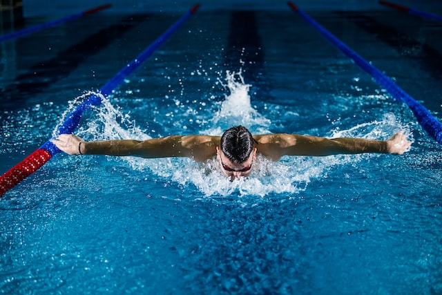
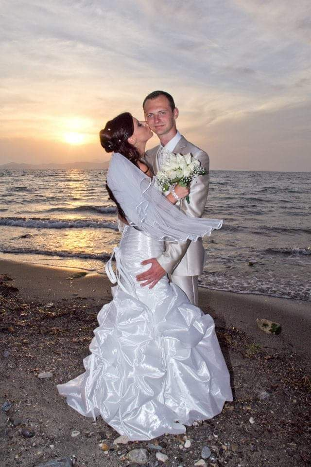
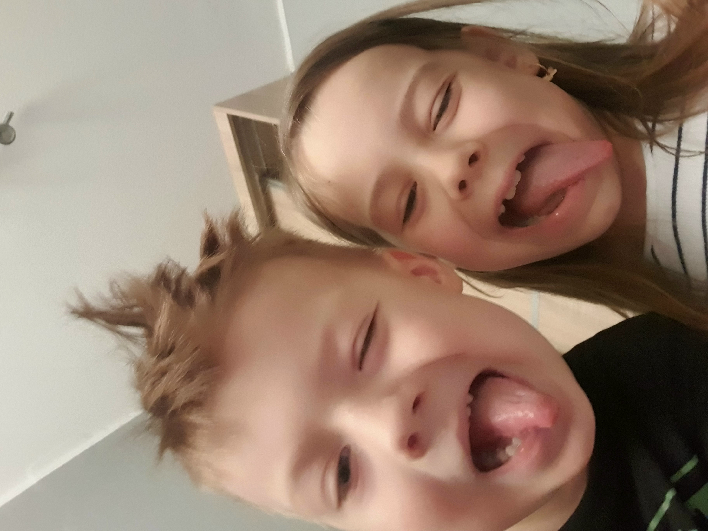
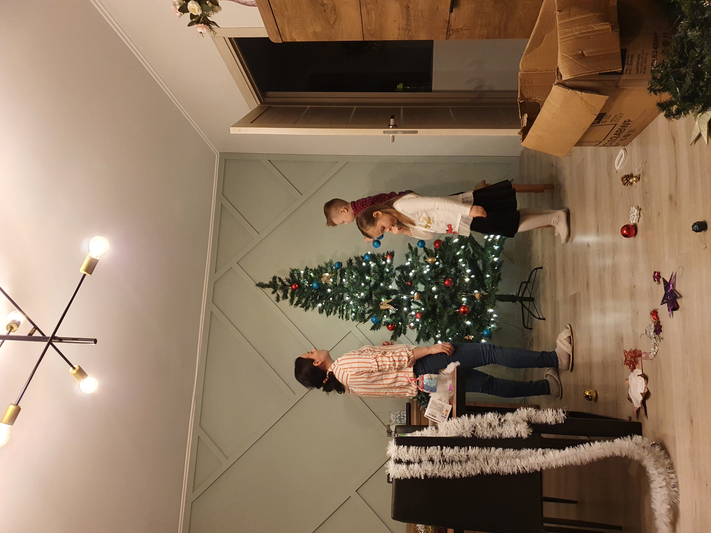
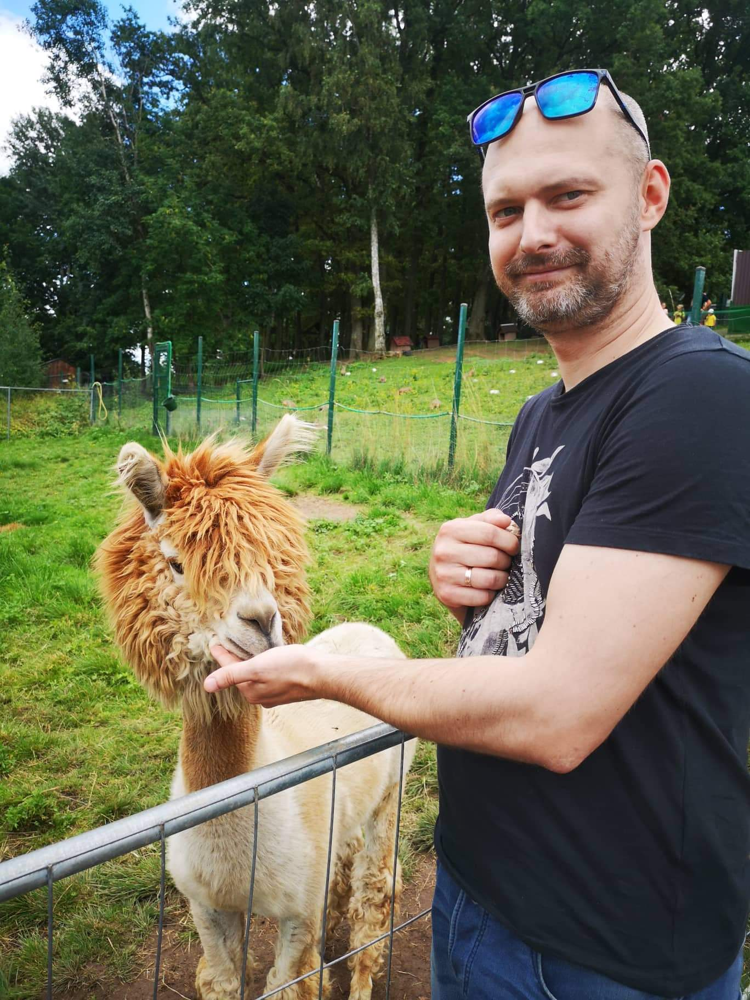

Gimiau ir užaugau Kaune. Nuo pat mažų dienų rodžiau didelį
susidomėjimą kompiuteriniais žaidimais. Pradėjau žaisti būdamas vos
keturių metų, bet dar ir šiandien pamenu kaip šaudžiau antis ant spalvoto šilelio. Pomėgis išliko iki šių dienų.
Savo jaunas dienas praleidau
sportuodamas ir su draugais. Pagrindinė sporto šaka kurią buvau pasirinkes - plaukimas. Šiai šakai atidaviau daugiau nei dešimt metų. Tai nebuvo mano vientelė. Teko mokintis: ledo ritulio, imtynių bei pramoginių šokių. Niekada nepraleidau progos žaisti krepšinio ar futbolo su draugais.


Mano širdis ne visada buvo Lietuvoje. Baigęs mokyklą iškeliavau ieškoti
laimės svetur. Pabuvęs Danijoje, nepilnai metus,
nusprendžiau grįžti ir tęsti mokslus Lietuvoje. Įstojau į KTU
architektūros specialybę, nes visada jaučiau, jog mano žinios apie technologijas, bei
supratimas apie dizainą yra mano stiprieji bruožai.
Klydau...tik ne dėl savo bruožų, bet dėl pasirinktos profesijos. Metęs mokslus nusprendžiau iškeliauti ir vėl, tik šį kartą ne vienas, bet su savo antrają puse.Išvykome, kaip ir dauguma tais laikais: į Angliją. Ten praleidome 11 metų. Dirbdavamas įgyjau aukštenįjį išsilavinimą bendrosios inžinerijos srityje. Didžiają 11metų dalį pradirbau akių lešių gamykloje inžineriniame skyriuje.


Kol gyvenome ir kūrėmė savo ateityje Anglijoje, vedžiau savo sielos draugę su kuria atvykau iš Lietuvos. Kaip jau turbūt ir pastebėjote, mėgstame keliauti ir pažintis kitas šalis, tad vestuvės įvyko ant vienos iš Graikijos salos paplūdyimio, artimiausių draugų apsuptyje. Mano ir mano žmonos draugystė prasidėjo kai mums buvo vos po 17 metų. Kartu mes jau praleidome 17 metų - puse savo gyvenimo, tikrąją to žodžio prasme.
Anglijoje taip pat susilaukėme dviejų nuostabių vaikų: Olivios ir Hugo. Olivia beprotiškai stropi ir darbšti - perfekcionistė, bei begalo linksma ir draugiška. Kita vertus Hugas - visiška priešingybė. Kaip ir Oli jis turi didelę širdį, bet chaosas yra jo draugas. Kartu jie puiki komanda ir yra neišskiriami...tikiuosi tokie jie išliks visada.


Galiausiai nusprendėme grįžti į Lietuvą. Galbūt tai buvo patriotizmas, o gal artimųjų ilgesys. Atvirai pasakius, dar iki dabar negalim tiksliai įvardinti kodėl...priežastis dabar jau nebesvarbi, nes labai džiaugiames tai padarę.
Jau daugiau negu metus dirbu kaip produkto inžinierius, vienoje iš Lietuvos elektromechanikos įmonių. Per gyvenimą sukaupiau nemažą bagažą inžinierinių žinių. Viename iš savo pirmųjų projektų: automatinis gyvūnų maitintojas valdomas nuotoliniu būdu, prasilenkiau su programavimu ir nuo tos dienos negaliu jo pamiršti. Žengiau žingsnį artimiau susipažinti su programinėmis kalbomis, nors ir jaučiasi tai - inžinerinė išdavystė.

Štai ir pabaiga sutrumpintos istorijos apie mane. Norėtusi papasakoti kur kas daugiau, bet jeigu atvirai, jau ir taip sunkiai spėsiu į terminą 😂. Viliuosi kad tai padės geriau su manim susipažinti.
Beje, labai mėgstu lamas